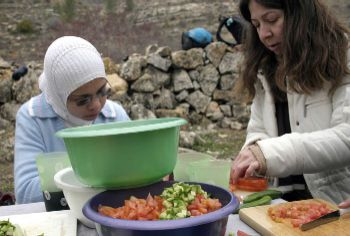

transforming CHECKPOINTS into MEETING-POINTS
| home |
| work |
| story |
| team |
| schedule |
| links |
| WHAT IT IS |
The All Nations Café is first and foremost a strong team of Israelis, Palestinians and internationals, who work together, visit each other's homes and see themselves as part of one family. Secondly, All Nations Café stands for atmosphere; a space of sincere and intimate sharing of feelings, of openness to all, regardless of your opinion, religion, creed, race or nationality. It is evoked by the aroma of spiced Arabic coffee, the taste of tea from locally grown herbs, and the pleasure of listening to live music by the fire and singing together in Arabic, Hebrew, English and Esperanto. Thirdly, it is a physical place on the road from Jerusalem to Bethlehem. Located in a buffer zone between the Israeli Army checkpoint and the Palestinian Authority, the All Nations Café is easily reached by Palestinians from East Jerusalem, Hebron, Bethlehem and the villages and refugee camps that surround them. It is also a safe place for Israelis from Jerusalem, from the Galilee and from the West Bank settlement block of Gush Etzion to come. Internationals can reach it from both the Israeli and Palestinian sides. The All Nations Café touches people from diverse backgrounds. At one meeting a soldier on duty sat side by side with a local farmer whom he had just detained an hour ago, discussing the latest olive harvest and treating each other as equals and as human beings. At another meeting, family members of Palestinian prisoners shared their story and dreams with Israeli settlers. Our work also involves engagement of youth on both sides of the border. Much of the All Nations Café vision has to do with empowering the new generation which has been growing in the most challenging time in the history of the relationship between the two people. |
DONATE
CONTACT US |

© All Nations Café Ltd 2003-8